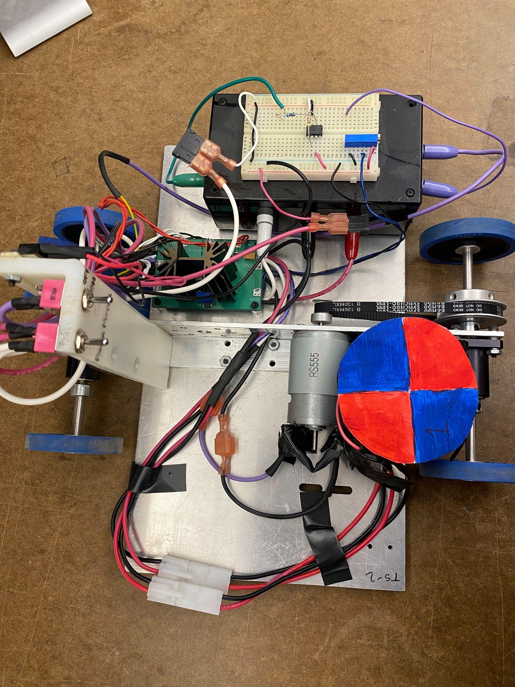
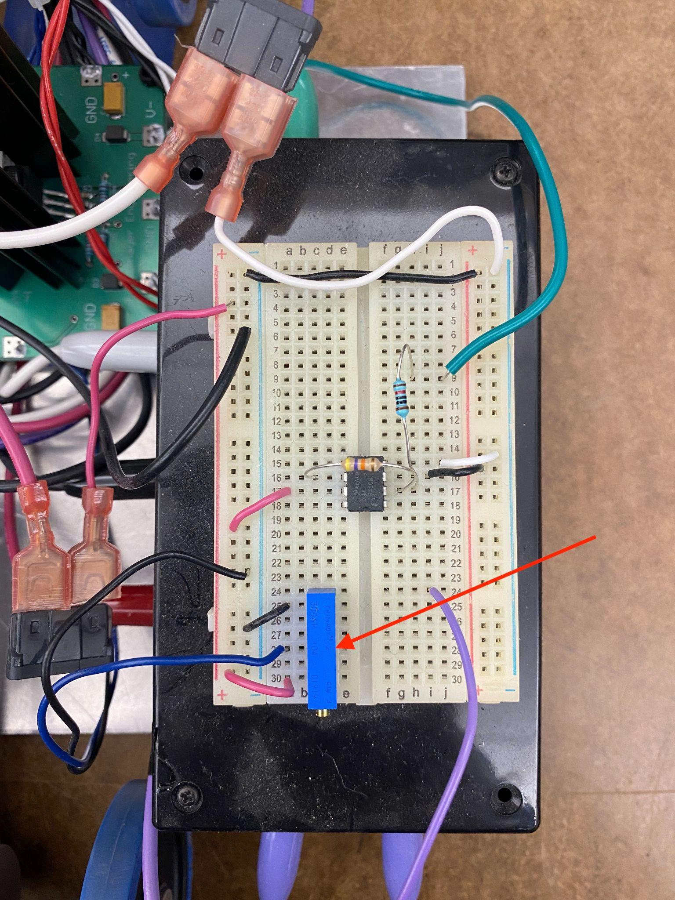

Module objective
You will derive the parameters of a real physical system — a small motorized cart — directly from video data, then investigate how much uncertainty and nonlinearity shows up when real measurements replace clean theory. This app walks you through all four parts of the assignment: tracking a video, analyzing your own run, pooling the class's data, and reflecting on what it means.
- Collect position data from a video of the cart.
- Analyze that data to obtain the system's DC gain and time constant.
- Aggregate the whole class's data into one larger data set.
- Draw conclusions about the system from the aggregated parameters.
- Reflect on the sources of variability in the system and the process.
The system
A small cart is driven by a brushed DC motor whose input voltage is fixed by a potentiometer.
Starting from rest, a constant voltage Vin is applied at t = 0,
and the cart accelerates to a steady-state speed. Modeled as a first-order system, the transfer
function from input voltage to cart velocity is:
For a voltage step of size Vin applied at t=0, the expected
velocity response is the classic saturating exponential:
v(t) = Km·Vin·(1 − e−t/T)Your job is to measure v(t) from video and back out Km and
T — then see how consistent those numbers are across repeated runs, voltages, and carts.


How the four parts fit together
Pick your assigned cart/run in Videos, then mark the target's position frame-by-frame in Track — or upload a data file if you used the desktop Tracker app.
In Analyze, turn position into velocity, fit Km and T for your 2.5 V and 3.5 V runs, and save the results.
Submit your numbers, then use Class Data to look at everyone's results together and check for linearity and outliers.
Answer the numbered questions in the Worksheet tab, using the numbers you generated. Export it when you're done.
About the data
72 videos are bundled with this app: two carts × three input voltages (2.5 V, 3.5 V, 5 V) × ~10–13 runs each, all shot from directly overhead at 15 ft with a 4 ft calibration ruler visible in frame. Cart 2's axle has a noticeable wobble that Cart 1 doesn't — keep that in mind when you get to the class-analysis questions.
Video library
Choose your assigned cart and run number at the top of the page, or just browse. Videos stream directly from the module's data folder — nothing to download.
Browse by cart / voltage
Track a video
This in-browser tracker replicates the workflow of the Tracker desktop app: define a real-world length scale, define an axis along the cart's direction of travel, then mark the target in each frame. If you'd rather use the actual Tracker software, skip to Analyze and upload its exported .txt file instead.
1. Load a video
Analyze position → velocity → parameters
Bring in position data — either sent from the Track tab or uploaded from Tracker's
exported .txt (columns: time, x, y). This mirrors the MATLAB steps in the assignment:
numerical derivative for velocity, then estimating Km and T.
My results
Runs you've saved from the Analyze tab, per cart. You need at least a 2.5 V and 3.5 V run for your assigned cart to answer Part 2 of the worksheet, and can add a 5 V run to check the model's prediction against real data.
Linearity check
If the system is linear, Km should be roughly the same across voltages, and steady-state velocity should scale proportionally with Vin.
Predict the 5 V response
Using the average Km and T from your saved runs, this simulates
v(t) = Km·5·(1−e−t/T) and overlays it against
any 5 V run you've analyzed, so you can judge the model against real data.
Submit to class pool
Sends your saved run parameters to the shared class dataset used in the Class Data tab.
Class data
Aggregated submissions from everyone using this app against the same server. Refresh after more classmates submit.
Steady-state velocity vs. input voltage
Cart 1
Cart 2
Summary statistics
Raw submissions
Worksheet
All numbered questions from the assignment, in order. Answers autosave in this browser. When you're done, export a report to submit on Canvas.